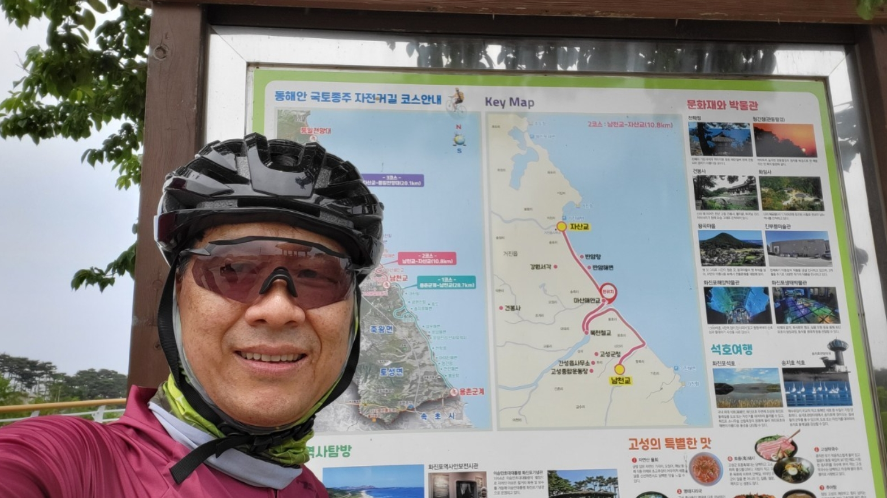
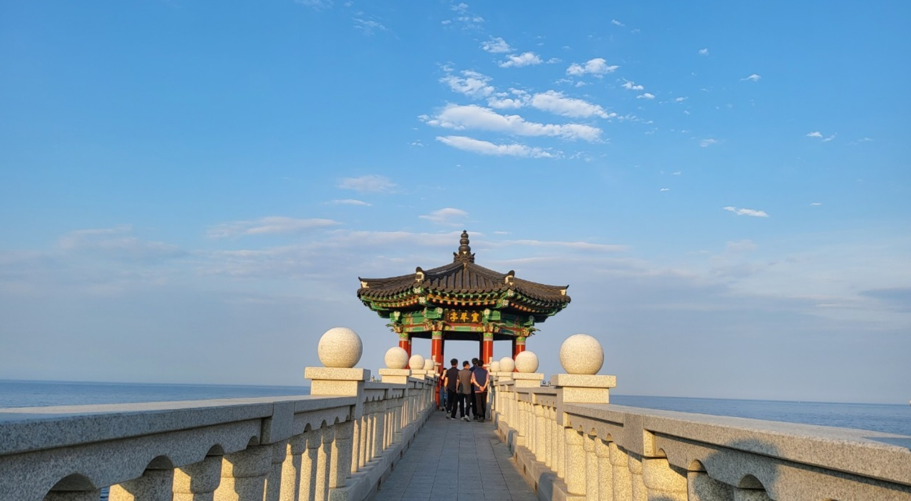
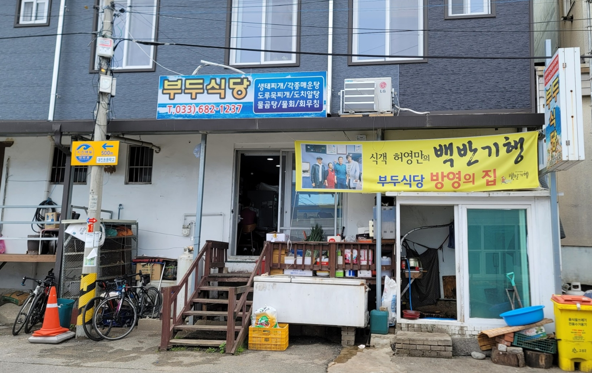
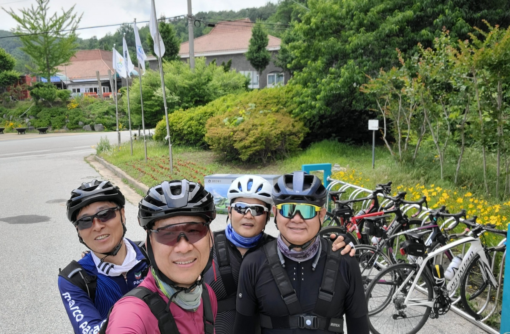
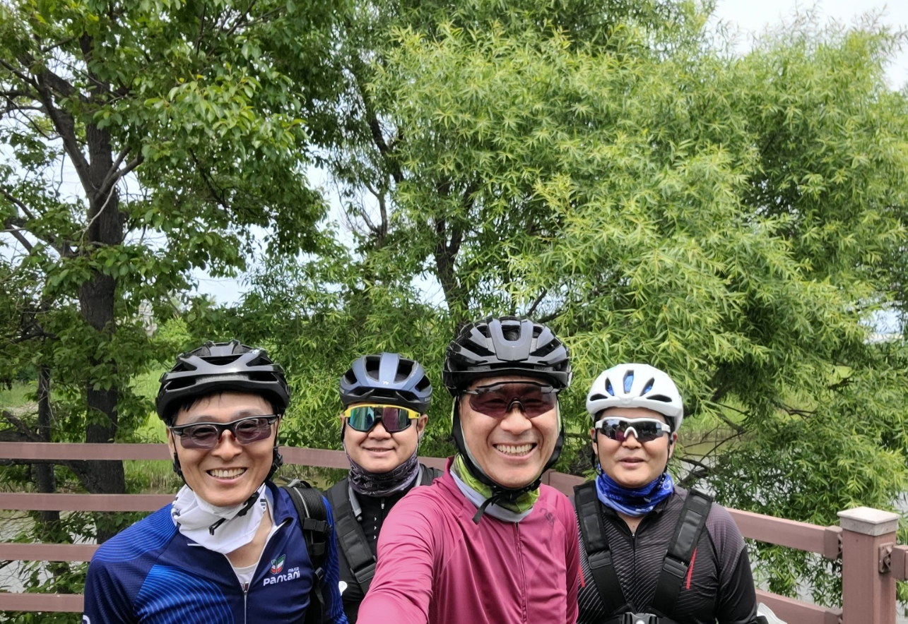
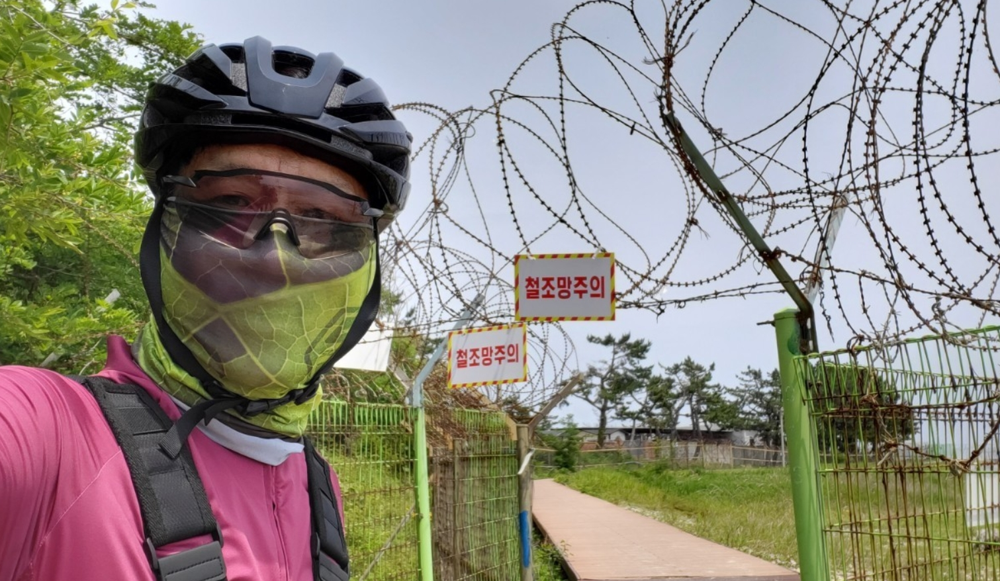
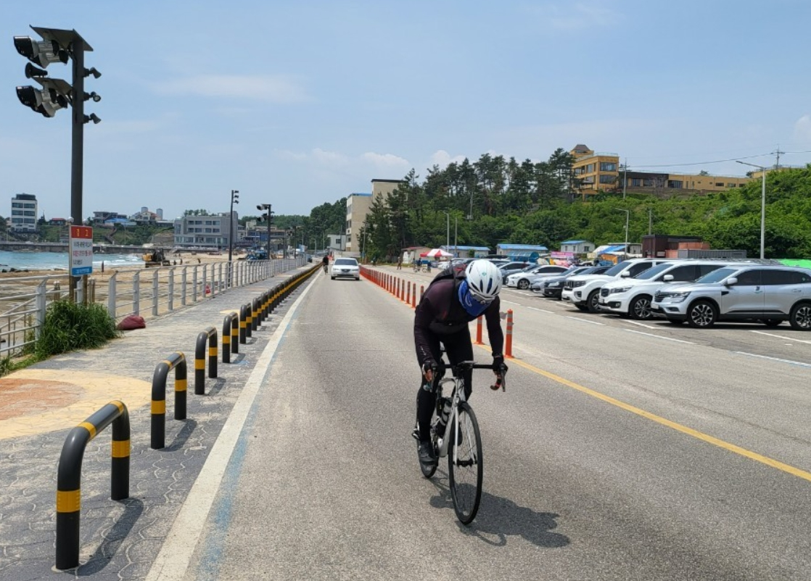
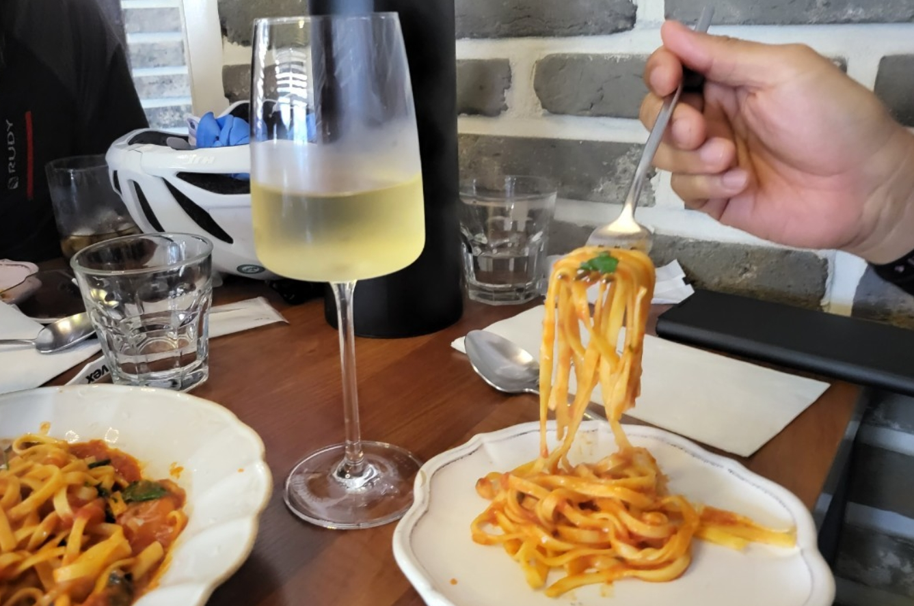
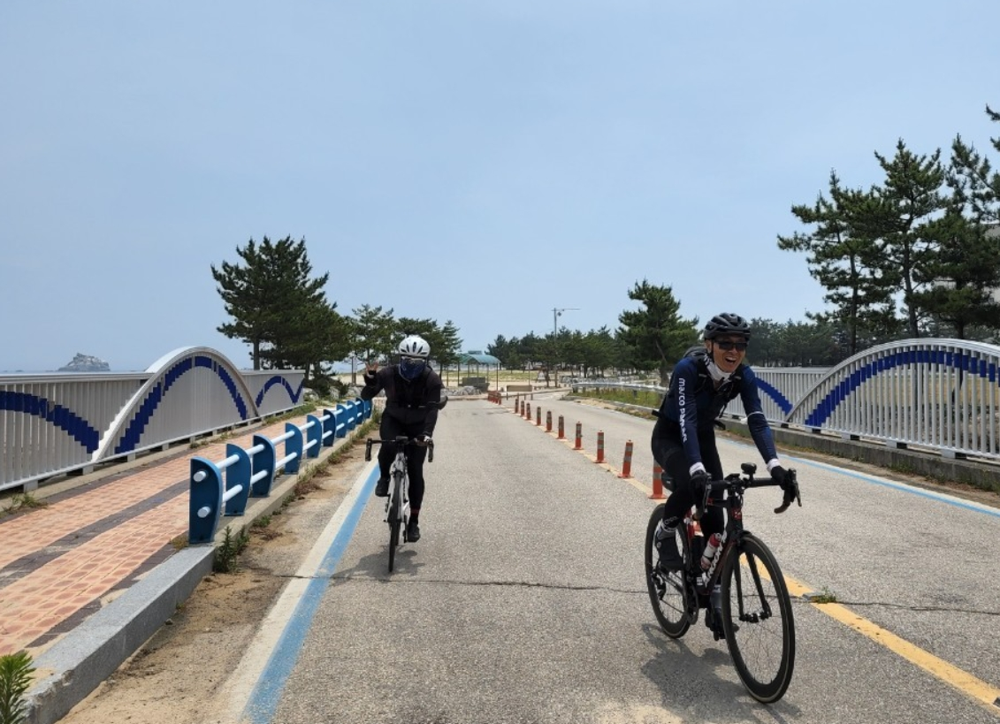
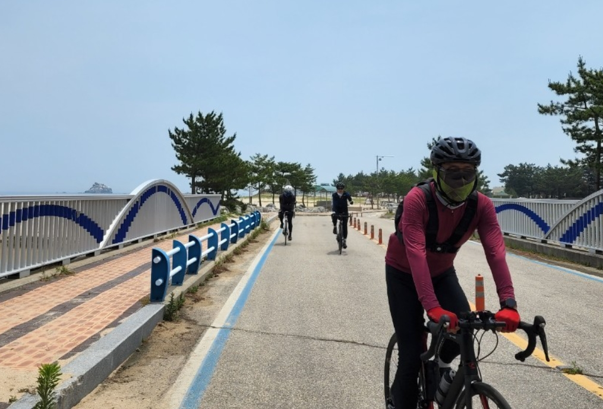

| 코스명 | 동해안 자전거길(강원) / 속초-통일전망대 |
| 코 스 | (속초시외버스터미널) - (영금정) - 봉포해변 - 북천철교 - 통일전망대 |
| 교 통 |
가는일 : 성남종합버스터미널 - 속초시외버스터미널 오는길 : 속초시외버스터미널 - 성남종합버스터미널 |
| 거 리 | 49km (왕복 95.77km) |
| 시 간 | 2시간 00분 (왕복 4시간 09분) |
| GPX 파일 | 속초T-통일-속초T GPX 다운로드 |
|  |  |
|  |  |
|  |  |
|  |  |
|  |  |
오늘은 지난번 속초-강릉 라이딩에 이어 속초에서 통일전망대로 코스를 잡고 출발하였습니다.
버스를 타고 가는 여정이라 자전거 라이딩족이 한번이 몰릴 것을 대비하고 각자 집에서 가까운 터미널을 찾다 보니 두팀으로 나누어서 안양 및 성남에서 출발하기로 하였습니다.
속초에 도착하여 지난번 영금정을 들렀으나 한번더 지나가기로 하고 영금정부터 시작하여 통일전망대까지 라이딩 하였으며, 해피프라이데이를 이용한 금요일 이라 그런지 차량도 사람도 거의 없어 자전거 길 및 공도에서 매우 편안한 라이딩을 할 수 있었습니다.
지난번 강릉을 가는 바닷길과는 다르게 통일전망대 까지는 해수욕장 및 바닷가가 아기자기하게 또다른 재미를 느낄 수 있었습니다. 다만 아쉬운 점은 자전거길을 막아놓고 일부 공사를 진행하는 곳이 있었고, 자전거길이 비포장등 군데군데는 관리가 전혀 되지 않은 부분이 있어 자전거를 메고 지나가고 포복으로 자전거길에 진입하는등 우여 곡절이 많은 라이딩 있었습니다.
통일전망대 인증센터에서 인증도장을 찍고 돌아오는 길에는 "허영만의 백반기행"에 나왔던 식당에 들어가 맛있는 점심식사도 하였으며, 고성왕곡마을에도 잠시들러 관광도 하고 즐거운 라이딩을 하였습니다.
마지막에는 속초시외버스터미널 근처에 있는 정든식당(장칼국수집)에 저녁을 먹으로 들렀는데 오후 5시인데 영업을 종료하여 못내 아쉬웠으며, 인근 피자집에서 스파게티와 피자로 맛있는 저녁을 하고 라이딩을 마칠 수 있었습니다.